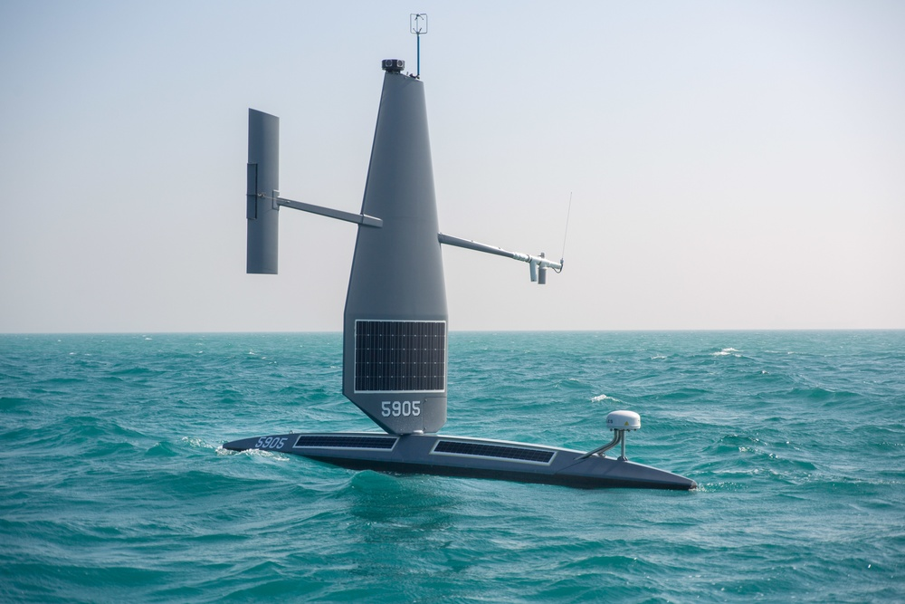

U.S. Army Spc. Natianna Strachen · DVIDS 7024339 · Public domain · A Saildrone Explorer operates off Bahrain in the Arabian Gulf, Jan. 27, 2022.
USNI News
A federal ruling opened Navy drone-boat contract decisions made through Other Transactions to court review
The Court of Federal Claims rejected the government's claim that its Other Transaction competition was beyond judicial review, giving Saildrone and Blue Water Autonomy a forum to challenge the Navy's unmanned-vessel selection process. The court found disparate treatment in the review of Saildrone's proposal and ordered the Navy to reevaluate it, adding a judicial check to a contracting tool the Pentagon has increasingly favored.
USNI News · Read source →